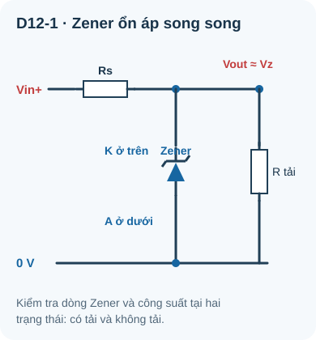
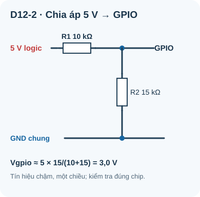

Diode Zener & Mạch Ổn Áp
Diode thiết kế để hoạt động trong vùng breakdown — nguồn điện áp tham chiếu chính xác và bảo vệ quá áp.
- Hiểu tại sao Zener hoạt động ở phân cực nghịch (ngược với diode thường)
- Hiểu điện áp Zener V_Z và cách chọn đúng giá trị
- Tính điện trở hạn dòng cho mạch ổn áp Zener
- Phân tích và mô phỏng mạch ổn áp Zener; chỉ lắp và đo khi đã xác minh linh kiện, nguồn và an toàn
- Hiểu giới hạn công suất của Zener (P_max = V_Z × I_Z)
- Ứng dụng: tạo điện áp tham chiếu 3,3V từ nguồn 5V
- Ứng dụng: bảo vệ quá áp (overvoltage protection)
- So sánh Zener với IC ổn áp 7805/LM317
Dụng cụ và linh kiện
| Tên | Thông số | SL |
|---|---|---|
| Diode Zener 5,1V/0,5W | BZX79-C5V1 hoặc tương đương | 2 |
| Diode Zener 3,3V/0,5W | BZX79-C3V3 | 1 |
| Điện trở 220Ω, 330Ω, 470Ω, 1kΩ | ¼W cho ví dụ 9V; nếu khảo sát 12V với 220Ω, tính lại dung sai/nhiệt và chọn điện trở ít nhất 0,5W phù hợp | 2 mỗi loại |
| Nguồn 9V hoặc 12V | Adapter DC | 1 |
| Tải test: LED + R hoặc điện trở 1kΩ | — | 1 |
| Breadboard + multimeter | — | 1 bộ |
1. Diode Zener — Breakdown có kiểm soát
Diode Zener được thiết kế đặc biệt để hoạt động trong vùng breakdown nghịch một cách an toàn và ổn định. Khi điện áp nghịch đạt đến điện áp Zener V_Z, diode dẫn điện theo chiều nghịch và giữ điện áp trên nó gần V_Z khi dòng và công suất vẫn nằm trong phạm vi cho phép.
Đây là đặc tính hoàn toàn ngược với diode thường: diode thường bị hỏng khi breakdown, nhưng Zener được thiết kế để dùng ở vùng đó.

Đọc mô tả D12-1
Vin đi qua Rs tới Vout. Từ Vout có hai nhánh song song: Zener có cathode ở Vout anode ở GND; tải R cũng từ Vout xuống GND. Vout gần Vz chỉ khi dòng và công suất Zener ở dải cho phép; kiểm tra có tải và không tải.
1.1 Nguyên lý ổn áp Zener
Khi V_in > V_Z:
- Zener breakdown → dẫn nghịch → "cố định" V_out = V_Z
- Dòng thừa (V_in – V_Z)/R_s chạy qua Zener và thoát xuống GND
- V_out duy trì ổn định tại V_Z dù V_in thay đổi hoặc tải thay đổi (trong giới hạn)
Khi V_in < V_Z: Zener không dẫn, mạch không ổn áp được.
2. Tính điện trở hạn dòng R_s cho mạch Zener
Ví dụ tính toán 1 — Mạch ổn áp 5,1V từ nguồn 9V
Yêu cầu: V_in=9V, V_Z=5,1V, I_load=10mA, I_Z=10mA (chọn)
Bước 1: R_s = (9 – 5,1) / (0,010 + 0,010) = 3,9 / 0,020 = 195 Ω → chọn 180Ω hoặc 220Ω
Bước 2: Kiểm tra công suất Zener tối đa: I_Z_max = 500mW / 5,1V = 98 mA
I_Z thực tế = (9–5,1)/220 – I_load = 17,7mA – 10mA = 7,7 mA << 98mA ✓
Bước 3: Kiểm tra công suất R_s: P = I² × R = (0,0177)² × 220 = 0,069W < 250mW ✓
Ví dụ tính toán 2 — Tạo điện áp tham chiếu xấp xỉ 3,3 V từ 5 V
Yêu cầu: V_in=5V, V_Z=3,3V, I_load≈0 (mạch đo ngoài có trở kháng cao), I_Z=5mA theo datasheet Zener đã chọn. Đây không phải chân tham chiếu ADC ngoài của ESP32.
R_s = (5 – 3,3) / 0,005 = 1,7 / 0,005 = 340 Ω → chọn 330Ω
Mạch Zener đơn giản nhưng kém hiệu quả: dòng thừa tiêu tán qua Zener thành nhiệt. Nếu tải thay đổi nhiều, điện áp ra có thể dao động. Chỉ chọn tải nhỏ và ổn định sau khi kiểm tra dòng Zener tối thiểu, công suất Zener/điện trở ở cả trạng thái có tải và không tải theo datasheet. Với nguồn cần ổn định hơn, dùng IC ổn áp phù hợp như LM7805 hoặc AMS1117.
3. Ứng dụng bảo vệ quá áp

Đọc mô tả D12-2
Tín hiệu logic 5 V qua R1 10 kΩ tới nút GPIO. R2 15 kΩ từ nút ấy về GND chung của cảm biến và ESP32. Tính lý tưởng Vgpio = 5 × 15/(10+15) = 3,0 V. Chỉ dùng cho tín hiệu chậm một chiều sau khi kiểm tra đúng giới hạn điện áp và ngưỡng logic của chip/board.
4. Phân tích mạch Zener; thực hành có điều kiện
Vẽ nhánh 9V → R_s 220Ω → nút V_out; Zener 5,1V mắc từ V_out về GND (cathode tại V_out). Tính dòng và công suất của Zener, điện trở ở cả trạng thái không tải và có tải trước khi chọn linh kiện thật.
Dự đoán V_out khi Zener ở vùng ổn áp. Với BZX79-C5V1, datasheet quy định V_Z=4,8–5,4V tại I_Z=5mA; đây là dải theo điều kiện thử đó, không phải điện áp bảo đảm ở mọi dòng và nhiệt độ. Tra đặc tính và điều kiện làm việc của đúng linh kiện trước khi dự đoán giá trị thực.
Thêm tải R_load=1kΩ song song với Zener trong phép tính hoặc trình mô phỏng. Tính lại dòng Zener và V_out; xác định mạch còn ở vùng ổn áp không.
Với V_in=12V, không thay nguồn trên mạch 220Ω/¼W: ở V_Z=5,1V danh định, điện trở tiêu tán (12−5,1)²/220≈0,216W, sát mức 0,25W trước dung sai và nhiệt. Phân tích trường hợp xấu nhất; nếu đo thật, chọn điện trở tối thiểu 0,5W và kiểm định mức Zener, nguồn cùng tản nhiệt theo linh kiện cụ thể. Datasheet BZX79 của Nexperia nêu điều kiện công suất và dung sai của họ Zener này.
Phân tích V_in=4V, thấp hơn V_Z: Zener không giữ 5,1V; giải thích V_out theo trạng thái có tải và không tải. Chỉ lắp, cấp nguồn và đo khi mã linh kiện, cực tính, công suất ở các trường hợp đã được xác minh.
| Điều kiện | V_in | R_load | V_out đo được | Nhận xét |
|---|---|---|---|---|
| Không tải | 9V | ∞ (hở) | _____ | — |
| Có tải 1kΩ | 9V | 1kΩ | _____ | — |
| Nguồn cao hơn | 12V | 1kΩ | _____ | Ổn định? |
| Nguồn thấp hơn V_Z | 4V | 1kΩ | _____ | Không ổn áp |
1: Ở tải 100mA, cần I_R≥110mA nên R_s≤(12−5,1)/0,110≈62,7Ω. Khi không tải, Zener 500mW chỉ chịu I_Z≤0,5/5,1≈98mA nên R_s≥6,9/0,098≈70,4Ω. Hai điều kiện mâu thuẫn: không có R_s nào thỏa cả dải tải. Cần đổi thiết kế/linh kiện; không chọn 68Ω rồi kết luận mạch đạt vì I_Z lúc tải 100mA chỉ khoảng 1,5mA.
2: Zener 5,1V không bảo đảm điện áp tại GPIO nằm trong giới hạn của ESP32 3,3V. Ngay cả Zener ghi 3,3V cũng có dung sai và điện áp phụ thuộc dòng. Với tín hiệu số chậm và rail 5V ổn áp, có thể dùng R1=10kΩ trên, R2=15kΩ dưới: 5V×15/(10+15)=3,0V danh định; kiểm tra khoảng điện áp đầu vào, dung sai và ngưỡng HIGH của board thực. Tín hiệu nhanh/hai chiều nên dùng IC chuyển mức phù hợp.
3: Với Zener: R_s cố định → khi tải thay đổi (I_load tăng), dòng qua R_s tăng → V_Rs tăng → V_out = V_in – V_Rs thay đổi. Zener cố gắng bù nhưng V_Z có hệ số nhiệt độ, trở kháng nhỏ không hoàn hảo. IC LDO dùng vòng phản hồi (feedback loop) để điều chỉnh liên tục → V_out ổn định hơn nhiều dù tải thay đổi.
4: Nếu giả định V_Z đúng 3,3V và không có tải khác, I_Z=(5−3,3)/1000=1,7mA, P_Z≈5,6mW. Kết quả chỉ kiểm tra công suất trong giả định này; phải tra đường đặc tính Zener tại 1,7mA, dung sai, xung quá áp và điện áp GPIO thực tế. Không suy ra GPIO “an toàn tuyệt đối”.